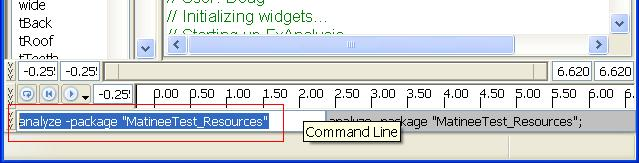

UDN
Search public documentation:
FaceFXCommandsKR
English Translation
日本語訳
中国翻译
Interested in the Unreal Engine?
Visit the Unreal Technology site.
Looking for jobs and company info?
Check out the Epic games site.
Questions about support via UDN?
Contact the UDN Staff
日本語訳
中国翻译
Interested in the Unreal Engine?
Visit the Unreal Technology site.
Looking for jobs and company info?
Check out the Epic games site.
Questions about support via UDN?
Contact the UDN Staff
UE3 홈 > FaceFX 얼굴 애니메이션 > FaceFX 명령
FaceFX 명령
문서 변경내역: Doug Perkowski? 작성. 홍성진 번역.
개요

Analyze
analyze -package "MatineeTest_Resources";MatineeTest_Resources 패키지에 있는 모든 USoundCue 오브젝트에서 첫 USoundNodeWave 오브젝트를 분석합니다. 존재하지 않으면 MatineeTest_Resources 라는 애니메이션 그룹을 만들고, 가능한 경우 각 USoundNodeWave 오브젝트 내의 SpokenText 를 사용하여, 각 애니메이션을 그에 맞는 USoundNodeWave 오브젝트 이름으로 짓고, 해당 그룹에 이미 일치하는 이름의 애니메이션이 있으면 덮어쓰지 않습니다.
analyze -package "MatineeTest_Resources" -group "Default" -notext -overwrite;위와 같으나 모든 애니메이션을 "Default" 그룹에 넣고, SpokenText 속성을 쓸 수 있어도 텍스트를 사용하지 못하게 하며, "Default" 그룹에 같은 이름의 애니메이션이 있어도 덮어씁니다.
analyze -soundcue "MatineeTest_Resources.welcomeCue" -soundnodewave "welcome";배치 케이스와 같은 작업을 하나, 하나의 USoundNodeWave 오브젝트에 대해서만 입니다. 원한다면 배치 케이스와 같은 플랙을 사용할 수도 있습니다. (-group 이 지정되지 않으면 여기서는 디폴트로 모든 것이 "Default" 그룹으로 들어가게 되겠지만요.) 또한 -anim 플랙으로 특정 애니메이션 이름을 강제할 수 있습니다.
UE3
ue3 -link -group "Default" -anim "Welcome" -soundcuepath "NewPackage.welcomeCue" -soundnodewavename "welcome";Default 그룹 내의 Welcome 애니메이션을 NewPackage.welcomeCue 사운드큐 오브젝트 안의 welcome 사운드 노드 웨이브 오브젝트로 링크시켜 줍니다. '배치' 작업도 가능합니다:
ue3 -link -group "Default" -package "NewPackage";Default 그룹의 모든 애니메이션을 돌아다니며 각 애니메이션의 사운드 큐 경로를 "NewPackage.oldCueName" 으로 대체합니다. 이는 soundCueName 및 soundNodeWaveName 가 예전 패키지에서나 새로운 패키지에서나 이름이 같을 것으로 (즉 해당 데이터를 찾기 위한 패키지만 바뀌는 것으로) 예상합니다.
ue3 -updatesoundcues현재 애님셋에 있는 모든 FaceFX 애님을 돌아다니며 참조된 사운드큐를 찾습니다. 그리고서 사운드큐를 FaceFX 애님을 되가르키도록 업데이트합니다. 동일한 사운드큐를 사용하는 애님이 여럿 있을 경우 (물론 허용되지 않은 경우죠) "last updatesoundcue" 를 실행시켜 보면 괜찮을 것입니다. 주: 모든 UE3 명령은 FxUE3Command.cpp 에 구현되어 있으니, 실제로 하는 작업을 확인해 보시려거든 해당 파일을 참고해 보시기 바랍니다.
명령 실행하기
exec -f "C:\MyFaceFXCommands.fxl"추가로 FaceFX 스튜디오는 다양한 실행 지점에서 Binaries\FaceFX 폴더 내의 여러가지 특정 FXL 파일 이름을 검색하기도 합니다. 예를 들어 autoexec.fxl 파일을 Binaries/FaceFX 에다 놓으면, FaceFX 스튜디오가 열릴 때마다 그 안의 명령이 실행됩니다. preloadactor.fxl, presaveactor.fxl, postloadactor.fxl, postsaveactor.fxl 같은 파일명도 찾아봅니다. 특정 액터에 대해서만 어떤 명령을 내리려는 경우, 아래 파일 중 하나로 만드시고 "ActorNameofFXA" 부분을 명령을 발동시키려는 액터의 이름으로 바꾸시면 됩니다.
- ActorNameofFXA_PreLoad.fxl
- ActorNameofFXA_PostLoad.fxl
- ActorNameofFXA_PreSave.fxl
- ActorNameofFXA_PostSave.fxl